河南机电职业学院
26届新生开学攻略
请查收你的机电生活指南
01 报道攻略
⏰ 报到时间
请同学们提前通过我i机电小程序完成报到前准备
线下报到时间：9月12日-9月14日
报到具体时间地点请查看各学院报到通知
📁 证件材料
- 1. 河南机电职业学院录取通知书
- 2. 考生准考证
- 3. 学生本人身份证及其复印件
- 4. 证件照（一寸和两寸的免冠照片，建议可备红白蓝底电子版备用）
- 5. 学籍档案（因各地对考生档案的管理规定不同，如有个人自带档案的，请大家切记不要将档案拆封并在报到后交至所在学院）
- 6. 团组织档案（团员证、入团志愿书及其他团关系转接等证明材料）
- 7. 申请绿色通道所需材料
🗺️ 报到路线
河南机电职业学院位于郑州市新郑市南大学城泰山路1号（泰山路与郑新快速路交叉口西200米路南）
- 🚗 私家车：导航至河南机电职业学院北大门即可。
- 🚇 地铁：乘坐前往新郑机场方向的地铁2号线，在华南城西站下车，步行至泰山路，向西走200米到学校。
- 🚄 火车/高铁：在郑州站或郑州东站下车后可选择乘坐地铁到达学校。
✅ 报到流程
安全到校：按照报到路线到校，无论采用何种出行方式，一定要确保人财物安全~
报到登记：跟随志愿者来到所在学院迎新报到处，在老师和学长学姐的指引下完成报到登记。
办理住宿：迎新志愿者与校园摆渡车会帮助你到达自己的公寓楼，在公寓管理老师处完成入住登记并领取宿舍钥匙。
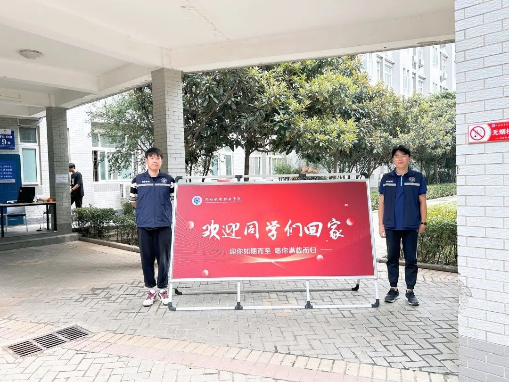
02 住宿与生活攻略
公寓总体布局
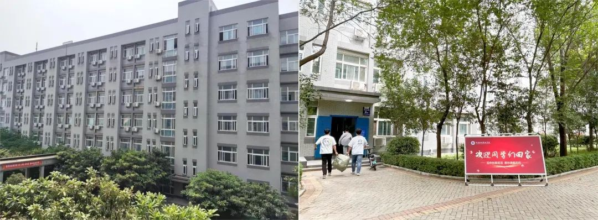
校内共有12栋学生公寓楼，整体分布在校园南侧。其中1-3号公寓楼位于校园西南侧、4-9号公寓楼位于南侧中部、10-12号公寓楼位于校园东南侧。新生按学院通知前往所在的公寓楼，你们的公寓管理老师会在公寓楼门前迎接大家。
公寓设施设备
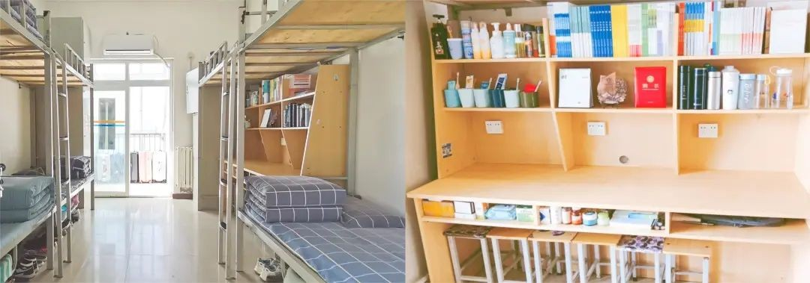
宿舍均设有独立卫生间、生活阳台、洗漱池、晾衣架、无线网络及有线网络接口，配备床铺、桌椅、储物柜、风扇、空调等设备设施。床铺尺寸为2.0*0.9米，大家可参照尺寸准备床铺用品。
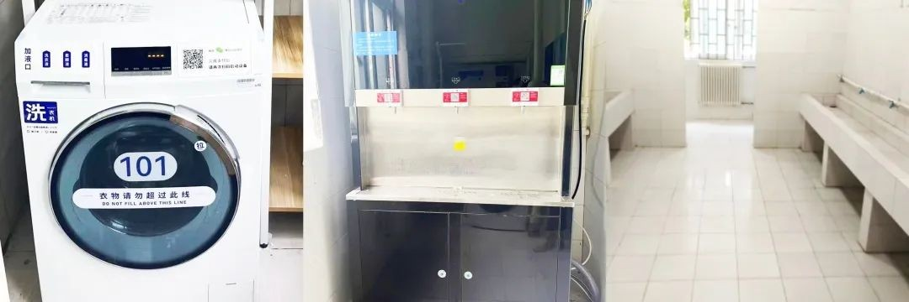
公寓楼内每层有两个公共卫生间分布在走廊两侧，每层都配备了洗衣机和冷热直饮水机，楼内配备有洗鞋机等设备满足大家日常生活。
💡 作息提示
公寓早上6点开门，晚上22:00锁门。请大家自觉遵守作息制度，养成良好生活习惯。集体生活场所，请同学们文明礼让、注意仪容仪表、遵守公寓管理规定。
生活攻略
公寓与餐厅、健身驿站、生活商超、创业美食街、洗浴中心、大学生心理健康教育中心、医务室、快递站等组成功能齐全的学生生活区。
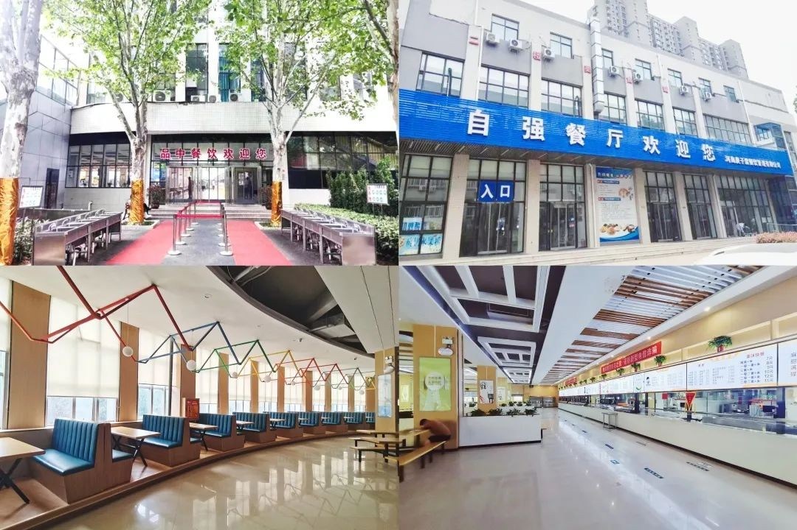
跟着宿小管一起解锁你的新生活吧~两座学生餐厅分别位于5号公寓楼南侧和9号楼西侧：
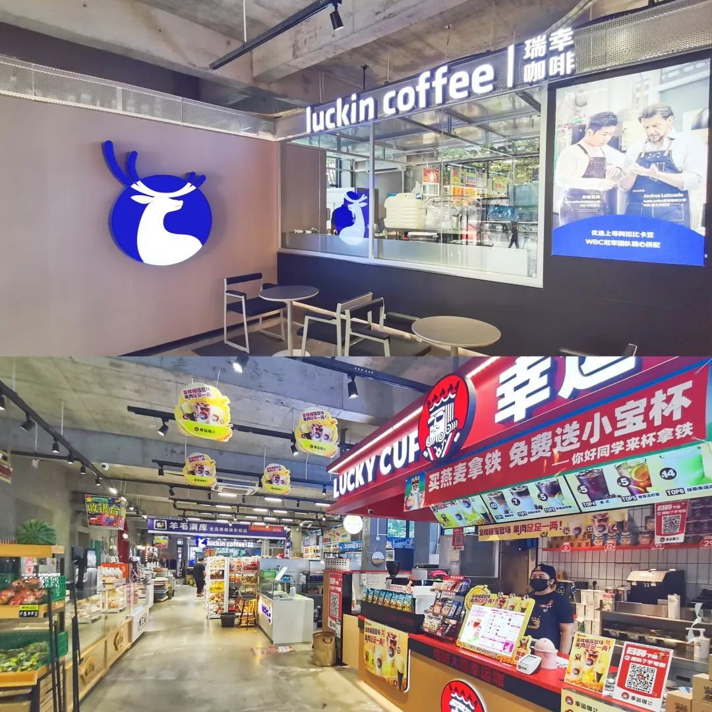
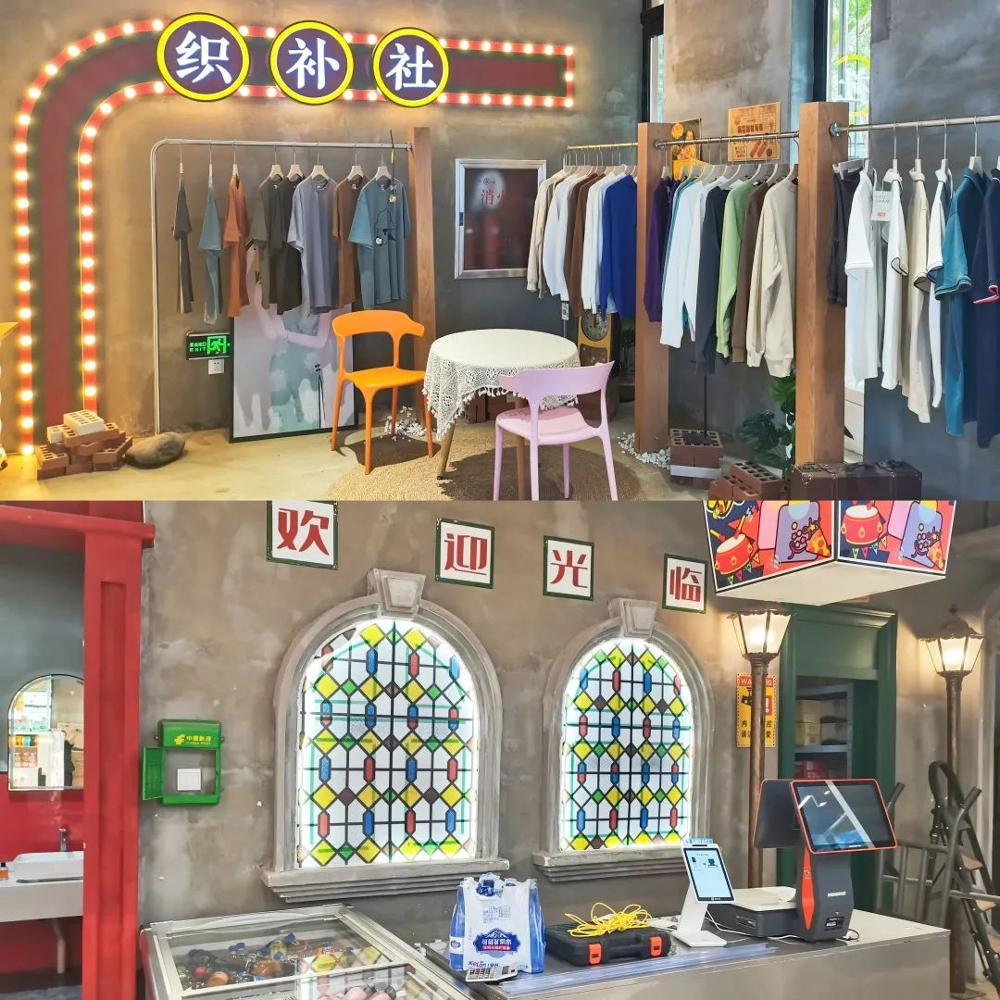
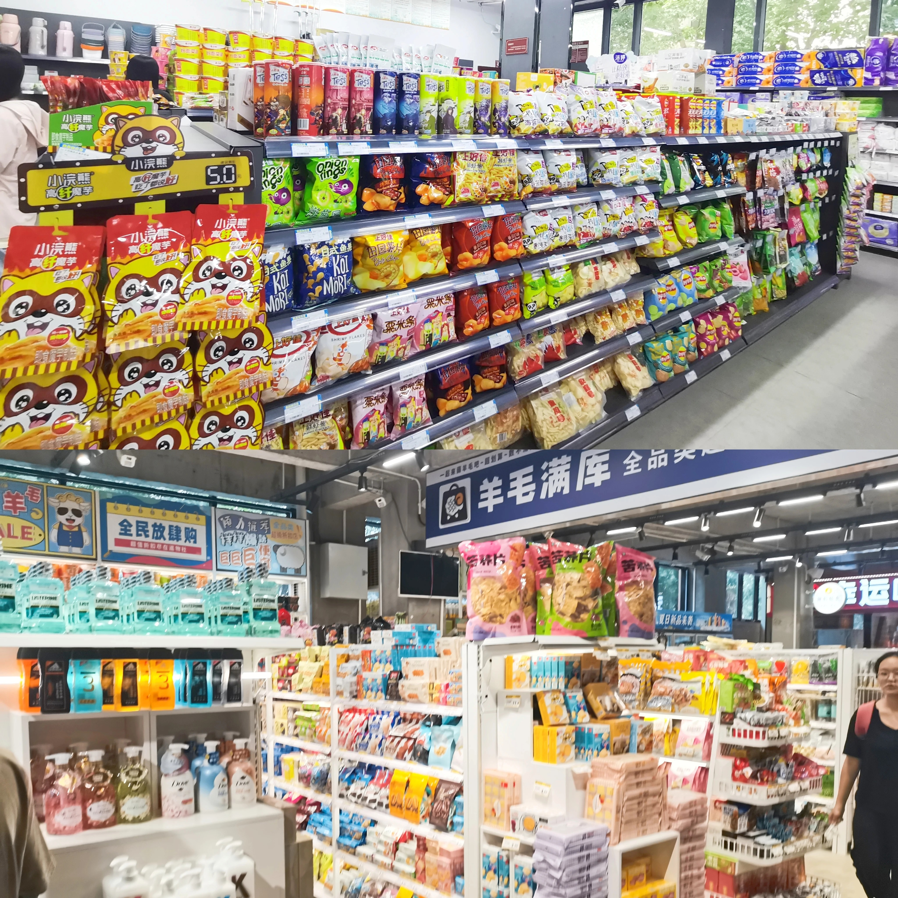
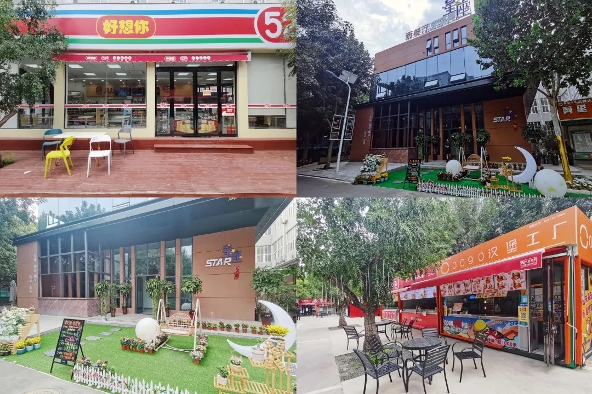
星座西餐厅和各类生活超市也很值得打卡哦！
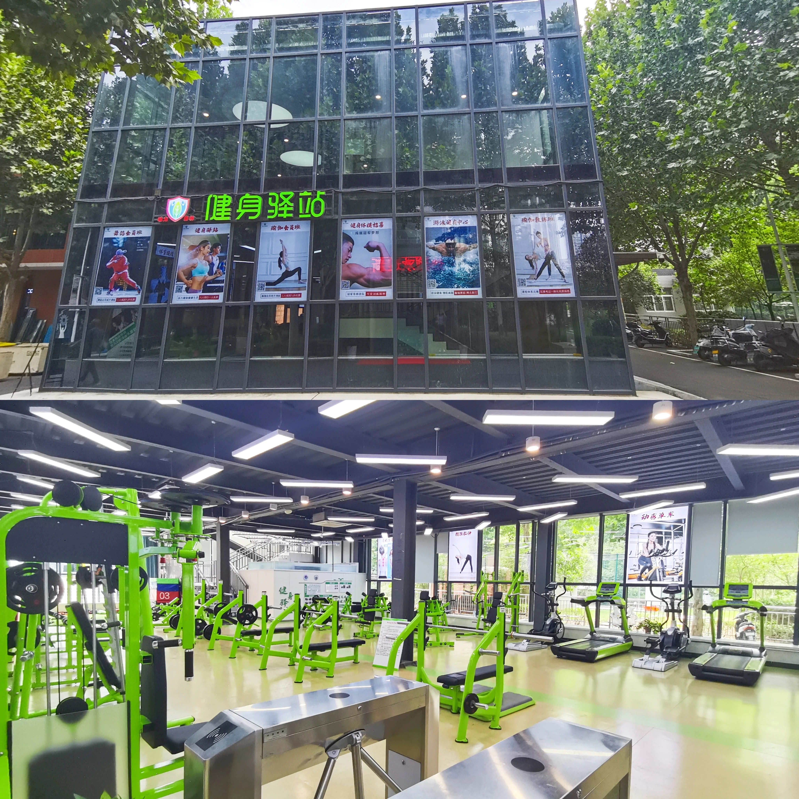
~开学前立的flag这次没有理由不实现！
心理健康教育中心和医务室位于4-5号公寓：
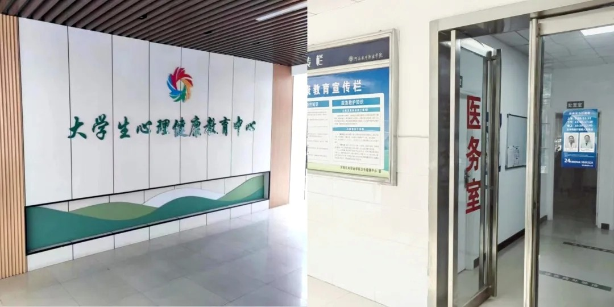
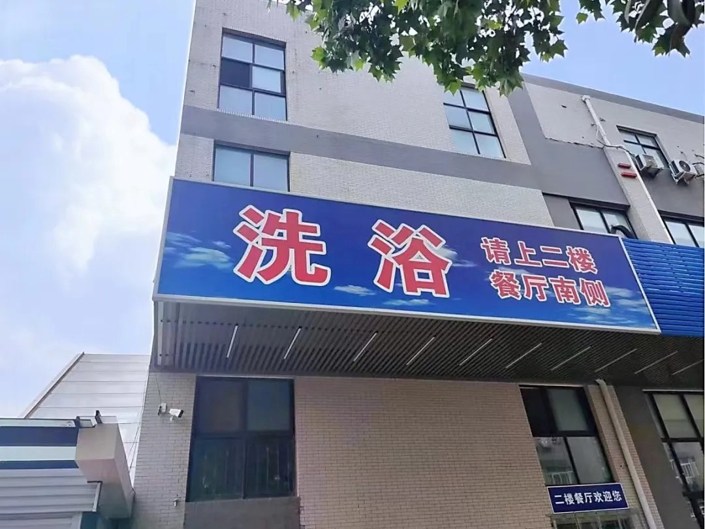
楼连廊洗浴中心位于自强餐厅2楼，内部均为独立淋浴间。此外，生活区设置有快递站，大家可选择将大型行李邮寄至学校（河南省郑州市新郑市龙湖镇泰山路1号河南机电职业学院）。
03 学习成长篇
1. 别挂科
挂科意味着什么？意味着你必须要再花一年时间跟着学弟、学妹重修课程、意味着你要白白浪费一年的时间精力、意味着你失去了争取奖学金名额的机会、意味着你失去了转专业的机会。更久远一点，你的专升本也会受到影响。
所以别听信某某的谣言“大学不挂一科就不是完整的大学生活”。因为只有挂过科的人才理解挂科之后的辛酸。吃不到葡萄说葡萄酸的人大有人在。
2. 入学前仔细阅读新生入学手册了解学校的规章、制度
很多大一新生都不屑于阅读新生手册，因为它普遍较长而且内容繁多。但是，新手手册上有这几点需要你着重关注：
- 一、奖学金评比制度：了解学校奖学金对于绩点以及成绩的要求，为即将到来的绩点大战做准备。毕竟，国奖足足8000元，国家励志奖学金也有6000元。
- 二、绩点、学分等制度：了解多少绩点以下是重修、多少绩点以上才具备争取奖学金的资格。有的大学开学还会专门举办分班考试、四级选拔考试等。
- 三、转专业制度：大一是试错成本最低的一年。即使你是被迫服从调剂到了并不喜欢的专业，也可以通过转专业再次调整。如果对专业不满意，一定要去了解绩点、排名、跨院转专业等详细流程。
3. 提升绩点与排名
先去教务系统里搜索你所修的专业课所占绩点的比重，确定重心的倾向。举个例子，如果微积分的绩点是3.0，大学英语的绩点是4.0，那么学习的重心就应该放到大学英语上。人的精力毕竟有限，把时间花在刀刃上才是最重要的。
4. 跟导员把关系搞好
导员跟高中班主任最大的区别就是导员需要管很多班，这就很大地分散了她的时间精力。在大学里奖学金名额只有那么几个，在你绩点达标的情况下，导员的推荐就显得尤为重要。
5. 询问学长、学姐
如果身边有拿到过奖学金的学长学姐，约出来好好聊一聊具体事项，能让你少走很多弯路。你可以通过新生QQ群、社团学生会，或者多去观看辩论赛、商赛等活动来结识优秀的学长学姐。
6. 掌握学习方法
大学里课程繁杂，凡是学习大佬级别的人物，该玩的都在玩，但每次一到期末考试前两周，他们就会收起玩心，静坐在图书馆认真复习。在最后两周，你必须拥有极强的资源整合能力，搜集各项真题，关注老师不经意间所说的知识点，发现规律。
7. 那些富有含金量的证书
- （1）四六级证书：大一能把四级过掉，大二能把六级过掉再好不过。趁着刚经历过高考知识储备正值巅峰，务必尽早考过。
- （2）普通话等级考试：中文系或希望从事教职业的人必考，分为读单音节字词、双音节、短文朗读等，考试难度不大但想要考到二甲以上需要多练习。
- （3）计算机二级：非计算机专业必考，熟练掌握办公软件在公司是最基础的能力。
8. 培养一项技能爱好
培养一项现在觉得对自己学习生活没有用却能让你心情愉悦的爱好吧（除打游戏、追剧外）。踢足球、打篮球、弹吉他、绘画、跳舞... 这些爱好会在你成长过程中给你带来力量，作为跳板让你认识更多有趣的人。
9. 多去大学图书馆
上百万本涵盖各大专业的藏书、安静的环境、一群共同奋斗的读书人... 有人在图书馆里找到了爱情、实现了考研逆袭、清晰了目标、拿到了国奖。多去图书馆擦出火花吧。
10. 对熬夜 Say No！
每晚驰骋于王者峡谷、追剧的快感比不上第二天早八十个闹钟都叫不醒的痛苦。长期熬夜会导致头发稀疏、皮肤出现痘印、脾气上涨。戒掉熬夜，你会发现头发不掉了、皮肤变好了、听课效率高了。
11. “认真你就输了”这句话从来就没赢过
世界上根本没有人不认真就能把一件事做的完美无缺。所谓大佬，都是在你们休息的时候暗自成长的。做好你的本职工作，认真履行你承诺的事情，永远是正确的。“认真可能会输，但不认真一定会输”。
04 宿舍生活篇
1. 开黑吗？四缺一！
如果你的宿舍是个名副其实的电竞宿舍，听到这句话时：赶紧跑，别回头！在该远离宿舍的时候远离宿舍，是一个真正想要学到东西的大学生必须具备的基本能力。
2. 对宿舍的正确定位
宿舍是用来睡觉的地方。想学习去图书馆，想运动去操场。别在大学宿舍里一窝窝一天，外卖一提、耳机一带、电脑一开，时间久了人基本也就废了。学校资源很多，不要仅限于三点一线。
3. 处理好宿舍关系
东南西北哪个地方的都有，一群习性不同的人被分配到了一个宿舍。大家相处的过程中，互相理解、互相包容，最终形成一个大整体，一个好的宿舍氛围能帮助你避免很多麻烦。
4. 在【合群】与【孤独】之间，我选择【孤独】
长期的合群真的让你快乐、得到成长了吗？如果没有，那就去适当的享受一个人的孤独吧！当你学会一个人在食堂吃饭、一个人去图书馆学习跑步时，你思考的深度加深了，视野与眼界也会更加宽广，适当的孤独能加速你的成长。
5. 把东西备齐，不要总是劳烦舍友
纸巾、发胶、零食等个人物品自己备好。如果你处处劳烦舍友的话，久而久之舍友就会嫌你烦，逐渐远离你（当然开玩笑叫“爸爸”的除外）。
6. 爱干净，讲究个人卫生
没人希望生活在一个杂乱的房间里，宿舍里的卫生需要大家一起维护。把个人卫生做好，是搞好宿舍环境的基本条件。毕竟你又不是异性，没人想闻你的体味。
05 恋爱爱情篇
1. 如果有那个让你怦然心动的“他/她”，不要犹豫，快去追！
过了高中三年，你再谈恋爱就不被称为早恋啦~ 在大学里谈恋爱简直是正常到不能再正常的事。放下手中的包袱，让对方感觉到你发自内心的喜欢，只要你穿戴整洁不邋遢，追到心仪异性几率还是很大的！
2. 别为了找对象而找对象，提升自己最重要
刻意追求只会让你成为海王。先努力提升自己，当遇到真正让你心动的那个人时，优秀的你一定不会错过。《最好的我们》里耿耿和余淮总没有在他们各自最优秀时相遇，但时间会冲刷一切，当两个人都足够优秀时，一定会走到一起！
3. 别当渣男渣女
玩弄感情的人最终也会被感情玩弄，真诚对待每一份感情才是正道。
4. 情侣之间需要磨合
我一直十分羡慕能走完四年的情侣，这大概就是：陪我走完青春的是你，现在站在我身边的依旧是你。大学四年是不被现实束缚的四年，爱得很真。情侣之间不要动不动就吵架冷暴力，相互磨合最重要。陪你走过大学时光的人，一定很爱你。
06 内卷篇与总论
五、“内卷”篇
内卷是近几年来中文网络上特别流行一个词，指发生了过度的竞争，导致人们进入内耗的状态。大学里绝大多数人只是跟风最强的那个人，找不到自己未来的方向，感到迷茫与空虚。所以，不要盲目跟风“内卷”。
- 做职业规划：与其毫无目的瞎努力，不如静下心列出规划，随着时间推移探寻方向。
- 不断试错：大一是试错成本最低的阶段，不要怕探寻未知，听从内心指引。
- 心无旁骛：认清并投资自己，远比跟风争夺一时利益重要得多。
六、总论
1. 木桶的长板思维：到了大学乃至步入社会，如果你还在盲目的补着短板，你的成长将大大受限！决定木桶能装下多少水的是它的长板。挖掘潜力、探寻优势，把你擅长的方向优化到极致，要“补长”而不是“补短”。
2. 拓宽你的眼界：不要局限于学校和宿舍。多出去走走，参加有意义的活动与比赛，不断趋近社会这个大整体。
如果上面还是有不理解、不清楚的话
可以加学长微信沟通交流！
河南机电职业学院手绘地图
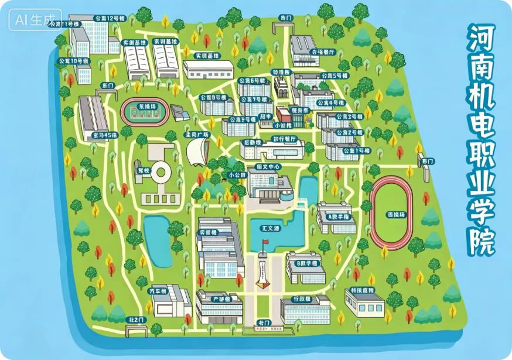
💡 学长提示：
可以双指放大查看，或长按图片保存到手机相册中，方便报到当天寻找公寓楼、餐厅和教学楼哦！
河南机电新生指南
(完整无删减 2026版 · 共12章)
01 学校概览
机电特色｜校企合作｜校园体感
河南机电职业学院是一所由河南省教育厅主管的公办高职院校，位于郑州下辖的新郑市。学校专业设置紧扣“机电”这一核心，机电一体化、电气自动化、新能源汽车、工业机器人等工科方向是其重点培养领域。2025年面向河南专科批计划招生3359人，其中物理类2675人、历史类684人，招生规模在省内同类院校中属于中等偏上水平。对于想读工科高职的同学来说，这所学校值得在报考时优先了解。
学校名片
| 办学性质 | 公办全日制普通高等职业院校 |
|---|---|
| 主管部门 | 河南省教育厅 |
| 校区地址 | 河南新郑（具体位置可查学校官网） |
| 2025招生计划 | 专科批共3359人（物理类2675人 + 历史类684人） |
| 重点专业 | 机电一体化技术、电气自动化技术、新能源汽车技术、工业机器人技术 |
| 二级学院 | 智能工程学院、机电工程学院、汽车工程学院、电气工程学院等 |
专业特色与校企合作
学校名字里的“机电”二字对应着几大重点专业群，投入资源和实训设备相对集中。机电一体化技术、电气自动化技术、新能源汽车技术这几个方向，既属于高就业率工科，也匹配地方产业需求。此外，校内还设有巨通电梯（轨道交通）学院、瑞德国际现场工程师学院等校企共建二级学院。这类合作模式意味着部分专业的培养方案会嵌入企业实训环节，学生在大二甚至大一就开始接触真实工作场景。需要提醒的是：不同专业的校企合作深度和岗位质量差异较大，报考前建议到学校官网查看各专业介绍中的合作企业清单与培养模式，或致电招生办确认。
根据掌上高考数据，河南专科批物理类投档最低分364分（位次约44.5万），历史类最低分385分（位次约19.2万）。注意医学类、师范类等特殊专业单独划线，不同专业之间分差明显，建议以当年省招办公布为准。
校园管理与日常生活
不少在校生的共同感受是：学校管理风格偏严格。具体表现为：
- 查寝制度：晚上十点准时查寝并关闭宿舍楼门，偶尔会有突击检查。如果习惯了高中相对规律的生活，适应起来不会太困难；但如果期待大学可以随意外出过夜、比较自由，可能需要调整预期。
- 外出政策：白天没课时可以正常出校门，不需要特别审批，但必须在查寝前返回。
- 日常节奏：整体氛围更像一个“半封闭式”高职，学校希望把学生主要精力留在校内。
宿舍与生活设施
| 楼栋 | 房间类型 | 床铺形式 | 其他设施 |
|---|---|---|---|
| 1—9号楼 | 7人间 | 上床下桌 | 空调、阳台 |
| 10—12号楼 | 8—12人间 | 上下铺+单独桌子 | 空调、阳台 |
好消息是所有宿舍都有空调，夏天不会太煎熬。学校设有两个餐厅，日常伙食种类能满足基本需求，但特色窗口不算多。校园面积不大，从图书馆到餐厅再到宿舍楼步行都在几分钟内，冬天不用骑车挨冻。
在校生眼中值得关注的点
- 实训课占比高：多数专业从大一下学期开始，实训课程就占据较大比重。实训车间里会涉及基础装配、电路连接、设备拆装等操作。有同学认为动手，机会多是好事，但也有人觉得体力消耗较大，需要一定的耐力和细心。
- 新郑的地理位置：距离郑州市中心大约需乘坐公交再换乘地铁，单程耗时约40—60分钟。周末去市区逛街、兼职或参加活动不算特别方便，但也并非完全隔绝。周边有超市、餐饮和部分娱乐设施，日常需求可以满足。
- 校园小而精：上课、吃饭、回宿舍都在步行范围内，节省了不少通勤时间。图书馆座位有限，但期末复习期间通常能保证基本使用。
💡 学长学姐建议
- 如果你目标是机电、汽车、电气类工科，这所学校专业对口度很高，校企合作也能提供实践机会，适合动手能力强、愿意走技术路线的同学。
- 宿舍条件请优先确认自己会被分配到的楼栋，7人间体验比8—12人间好不少。
- 对管理严格较敏感的同学，可以提前了解最新的作息与查寝细则，不要仅凭想象判断。
- 分数线每年有浮动，建议参考近三年数据再结合当年位次做决策，不要只盯着最低分报专业。
02 专业选择
专业方向｜志愿填报｜转专业
走进河南机电职业学院，你会面对一个“70+”的专业菜单。机电、汽车、电气、计算机、设计、电商、学前教育……琳琅满目，但作为过来人，我们必须提醒你：专业数量多不代表每个方向都值得投入。有些是学校深耕多年的强势领域，有些则是近几年才开设、课程体系尚在磨合的新方向，两者之间的学习体验和就业竞争力差别可能很大。
志愿填报：第一专业决定你的走向
学校在录取时采用专业优先的规则——先按你填报的第一专业进行排队，如果第一专业已经录满，才会依次查看第二、第三专业。这意味着你的第一专业志愿非常关键。如果第一专业报得太热门，而你的分数不够高，很可能被直接调剂到其他专业，后面的志愿即使填了也基本用不上。往年就有同学在单招时因为第一专业没填好，最终被分到一个完全不了解的方向，整个大学节奏都受到影响。
第一专业不能随便填——先确认自己的分数在这个专业往年录取中大概什么位置，再做决定。如果分数不占优势，可以考虑把“稳一稳”的专业放在第一志愿。
服从调剂，勾还是不勾？
大多数老生给的建议是：勾上服从调剂，但提前想清楚哪些专业是你完全不能接受的。对于专科批次的考生来说，滑档的后果比较严重——可能直接错过本批次录取机会。如果你对某些专业特别排斥，可以提前了解它们是否在往年被调剂的范围里，心里有个数。
2025年河南物理类专科批最低录取分为364（位次约44.5万），历史类最低为385（位次约19.2万）。热门专业与冷门专业之间的实际录取分会拉开明显差距，填报时不能只看最低分数线。
各专业方向的学习体验
- 🏭 机电一体化、电气自动化——学校的“压舱石”：机电工程学院和电气工程学院是学校建校以来投入资源最多的板块之一，实训设备相对齐全、课程体系成熟。课程以动手操作为主：车间实操、电路接线、PLC 编程等。对应的就业方向主要集中在制造业企业的技术岗、设备维护岗，在河南本地的需求量相对稳定，适合想快速进入一线技术岗位的同学。
- 🚗 新能源汽车技术、智能网联汽车——风口上的新方向：报考热度明显上升，与汽车行业向电动化、智能化转型的趋势有关。课程内容会涉及电池系统、电驱动技术、车联网基础等。不过行业发展很快，新方向的课程体系还在迭代当中，部分课程内容可能跟不上行业变化的速度，要有课下主动更新知识的准备。
- 💻 计算机应用技术、软件技术——热门但需要自驱力：课程会教编程基础、数据库、网页开发等入门内容。但专科三年时间有限，单靠课堂教的东西很难直接找到开发岗的工作。真正拉开差距的是课下自己练项目、考证书、参加比赛。如果你对写代码没有兴趣，进校后可能会比较吃力。
- 🎨 设计类——兴趣之外也要算经济账：会教软件操作和基础设计理论，但作业量较大，经常需要熬夜赶图。额外开销不容忽视：打印、模型材料、绘图工具等耗材费用是一笔持续的支出。
选错了专业，还能调整吗？
转专业：学校的转专业流程一般包括笔试和面试。笔试题型相对固定，面试比较看重自我介绍和转专业的动机，表达自信、逻辑清晰很重要。提前跟目标专业的老师沟通，让老师对你有印象，可能在面试时起到帮助。名额每年有限，热门专业竞争激烈。如果打算转，大一上学期就要开始关注通知，并把成绩和个人表现作为申请参考。
专升本：读完三年后如果真的不喜欢原专业，专升本考试时可以跨专业报考。不少老生把专升本当作重新选择方向的机会。
03 城市生活
南大区位｜消费体感｜四季气候
1. 学校到底在哪儿，出行方不方便
学校的具体位置在郑州南大学城，距离市中心（比如二七广场、大卫城）大约二十多公里。周边几所高校紧挨着，形成了一个比较成熟的生活圈——吃饭、购物、取快递基本不用出大学城范围。
- 去市中心怎么走：坐公交或地铁单程需要预留一个小时左右。郑州地铁持续扩线，目前已经能比较方便地连接南大学城和主城区。
- 实习方面的区位优势：郑州制造业和物流行业企业资源集中，尤其是机电、汽车相关方向。学校周边有几处产业园区，未来找对口实习的机会相对多一些。
2. 在这里生活，一个月花多少钱够用
校内吃饭：食堂价格在郑州高校里算比较亲民的，一顿正餐大约10到15元能吃饱，早餐几块钱搞定。一个月伙食费在1000到1500元是比较普遍的区间。大学城商业街小吃摊和外卖店价格也比市中心便宜。
容易被忽视的大头——电费：夏天即使只在晚上开空调，两周下来电费也能超过两百元。建议入学后第一时间了解宿舍电费计价方式，并和室友商量好空调使用时段和分摊方法。
整体生活费参考：郑州消费水平属于中等偏友好。平时在食堂吃、偶尔点外卖，一个月1500到2000元不算紧；如果社交活动多，2500元左右会宽裕一些。
3. 郑州的气候，南方同学需要提前了解
- 夏天最需要适应：六七月气温经常在35度以上，闷热感强。建议准备几件速干面料的短袖，随身带个小风扇。
- 冬天干冷，暖气是福音：气温在零下几度到零上五六度之间。南方来的同学普遍反应皮肤干燥、嘴唇容易起皮，润肤露和润唇膏绝对是刚需。十一月中旬开始集中供暖，但室内外温差大进出要注意增减衣物。
- 春秋两季比较舒服：春天偶尔会有沙尘天气，秋天干燥晴朗，是户外活动的好季节。
04 开学报到
报到动线｜材料准备｜行李打包
报到前，先把这几件事落实
报到当天最核心的环节就是核验身份和接收材料。需要随身带齐：录取通知书（原件）、身份证、高考准考证、一寸和两寸免冠证件照（白底蓝底）、团组织关系转接材料、纸质档案（切勿拆封）。最好的办法是出发前把所有证件放进一个透明文件袋或手提包，报到时直接背着，快速拿出来。
学费缴纳：学费一般要求在报到前通过学校指定的线上渠道缴纳，线上的缴费凭证建议截图保存。文史类约3700元，理工类4200元，艺术类6000元，住宿费（7人间）600元（以当年实际为准）。
行李打包：大件提前寄，小件随身带
- 提前用快递寄到学校：包括被褥、厚衣服、书籍、非紧急的生活用品。建议在出发前一周左右发货，收件地址写学校全称并留自己手机号。
- 随身行李只带：报到当天要用的证件、换洗衣物、洗漱用品、充电器、少量现金等。足够撑过前两三天即可。最稳妥的做法是开学前5到7天发货。
报到当天走完全程
出站时留意穿志愿者服装、举着指示牌的学长学姐，乘坐直达校车。校门口有志愿者引导去各学院迎新点，完成核验录取通知书、确认缴费、领取校园卡及钥匙等流程。高峰时段可能排队较长，尽量在早上8点左右到校人相对较少。
入住宿舍后的正确姿势：先检查设施（床铺、空调等），有问题当天找宿管报修；联系室友互相认识；熟悉周边食堂、超市、开水房位置。
报到后紧接着做什么：安排体检（空腹）、参加第一次班会、统一领取教材、购买未齐的生活用品。
05 宿舍入住
房型分配｜入住采购｜日常设施
整体来看，学校宿舍硬件在省内同类院校里属于中规中矩的水平——独立卫生间、空调、暖气、WiFi 都配齐了，但老楼独立卫生间不等于能在宿舍洗热水澡。
楼栋分布与房型选择
目前共有 10 栋宿舍楼，男生主要在 1、2、3 号楼，女生在 4 号楼。北校区建有 G8、G9、G10 三栋新宿舍楼，配备了电梯，条件更好。2号楼离食堂最近；4号女生楼紧挨教学楼；北校区新楼房间带独立卫生间和独立浴室，两个上床下桌加两个上下铺。
主流房型是 7 人间，住宿费 600 元/年。房间内3个上下铺加1个上铺，配有书桌和三层书架。部分改造四人间费用在 800-1000 元/年之间，数量有限。
日常生活设施使用指南
- 洗澡：老楼宿舍去自强餐厅（新餐厅）二楼的公共浴室，每次费用约5元。北校区G8-G10新宿舍自带独立浴室，热水按早、中、晚三个时段供应，扫码付费。
- 洗衣服：老楼每层配有公共洗衣机，标准洗约4元一次，每个寝室发一个洗衣桶。北校区新宿舍没有标配洗衣机，需宿舍成员自行购买。
- 饮水：老楼直饮水机扫码/刷脸接水。北校区新宿舍需自购饮水机或订桶装水。
- 用电须知：限电功率上限约800W，超过会跳闸，大功率吹风机等禁用。空调电费每人每月差不多15块，超额需在“智趣校园”充值。
日常管理与纪律
每天早上6:00开门，女生楼约21:40锁门，男生楼约22:00锁门。宿舍全天不熄灯不断电，进出刷脸。周六日可自由出校，但不能在外过夜。周一至周日晚上查人数，周日晚上和周三下午检查宿舍卫生和内务。
06 军训攻略
物品准备｜请假流程｜防晒防暑
新生军训一般安排在开学前两周左右，持续约21天，男女生分开编队训练。白天的核心内容是站军姿和队列动作，晚上也有训练安排，校园内蚊虫较多需喷驱蚊水。统一发放迷彩服，防晒服和冰袖禁止穿，袜子必须纯黑色。
物品准备分层参考
| 必带物品 | 厚鞋垫(推荐回力硅胶款)、高倍防晒霜(SPF 50+)、大容量水杯、驱蚊水、皮带、小包纸巾、藿香正气水 |
|---|---|
| 好用物品 | 速干背心、黑色发夹、清凉喷雾、帽檐清凉贴、创可贴 |
| 不用带 | 防晒服、冰袖(不让穿)、超大水壶 |
身体不适与请假流程
请假条必须包含三个要素：1. 具体症状+证明（如诊断书）；2. 精确时间（具体到小时）；3. 本人签名+辅导员签字或校医院盖章。先找辅导员签字再拿给教官，通过率较高。
申请免训需二甲及以上医院开具证明，流程为：自己写申请→校医院审核→辅导员签字→学院签意见→武装部审核签字。免训后一般仍需在学校“陪训”做后勤工作，不能完全脱离场地。
07 食堂美食
三大餐厅｜场景吃法｜平价窗口
校园内共有三座学生餐厅，均支持扫码支付，大部分菜品价格在 10-15 元之间，部分窗口提供 5-7 元低价选择。
- 知行餐厅（老餐厅）：品种全，分量足。一楼麻辣香锅口碑较好。适合早餐的麦多馅饼、鲜虾包出餐快。
- 星座餐厅（小餐厅）：规模小，排队快。鸡蛋灌饼、手抓饼适合赶时间。
- 自强餐厅（南门）：性价比高。二楼自选米饭和 5元起的兰州拉面是“月底救星”。一楼有重庆小面、塔斯汀等。
校内还有蜜雪冰城、幸运咖、瑞幸等连锁品牌满足下午茶需求。
08 学业规划
线场课堂｜选课绩点｜转专业
大学里的“及格”不等于考试过了60分，必须修够培养方案规定的全部学分，而绩点直接影响评优、奖学金评定和后续升学。学分越高的课程，对总绩点影响越大。选课前，找同专业的学长学姐打听老师讲课思路和给分情况非常实用。平时分通常占30%-40%，出勤率和作业都算在内。
“线场课堂”：不是在企业里打杂
学校主打“产教融合”模式，与宇通、比亚迪等企业合作。部分专业大一下学期就会前往合作单位利用企业设备做实操训练和项目学习（在学中做、做中学）。提醒：签实习合同前一定要分辨是劳务合同还是劳动合同，误签社会工的劳动合同可能影响应届生身份。
转专业与升学
转专业：大一是唯一的调整机会，越早动手越主动，拖到大二基本不会有机会。如果想考公或专升本，入学第一个月就去查对口方向，不对劲立刻找辅导员问转专业要求。
专升本与考研：专升本渠道通畅，建议大一考过英语四级。专科考研需毕业满两年以同等学力报考，需加试且限制较多，先升本再考研选择面更宽。
大一尽早考下计算机二级证书和普通话水平测试，熟练掌握办公软件，参加创新创业中心比赛，这些比盲目考证更有价值。
09 社团社交
院级校级｜百团大战｜大一融入
新生微信群是入学前最重要的社交渠道，能问到选课、报到等大量信息，但遇到索要联系方式的账号需保持警惕。学生组织主要分两层：院级部门“性价比”更高（老师容易记住，不耽误上课，评优优先），校级组织能认识不同学院的人、履历亮眼但付出精力多。
重点组织参考
- 学生会：评优入党优势明显，但工作琐碎，能锻炼组织协调能力。
- 青协：公益类，对简历实打实加分，特别是准备专升本或考公进体制内。
- 大创中心：实战路线，接触商业比赛和企业资源。
- 团委：偏重公文写作和活动策划，适合想熟悉机关工作节奏的同学。
- 知行交响乐团：纯兴趣驱动，无任务压力。
百团大战建议先走一圈记下感兴趣的，查好活动频率后再决定报1-2个。面试时如果报了太多其他部门可能被直接刷掉。除了社团，晚会、创新创业比赛、体育赛事也是扩大社交圈的好渠道。
10 运动与就医
体测备考｜医院就医｜医保报销
每年体测包含：50米跑、800/1000米、立定跳远、坐位体前屈、仰卧起坐/引体向上、肺活量。成绩不合格影响毕业。建议提前一到两周模拟训练，考前30分钟动态拉伸，长跑前喝功能饮料不要太晚。如因身体原因无法参加，可凭医院证明向学校申请免测。
校医院、转诊与医保
校医院是看病第一站，起付线低、报销比例高。若需去校外医院，必须先由校医院开具转诊单，转诊单通常不支持事后补开。急诊可免转诊单，但需保留好所有病历发票。
大学生医保性价比高，能报销门诊、住院、运动意外伤害等；不能报美容、自费药、交通事故对方全责等。入学后激活医保电子凭证，寒暑假回家看病前务必在手机上办理“异地就医备案”，否则无法报销或比例降低。校外看病回校报销需准备：发票、费用清单、病历、校园卡复印件、转诊单等原件，材料不齐不予受理。
11 入学 Checklist
📝 报到前到落地后要做的事
- 线上操作：打开“我i机电”小程序完成预报到信息采集、在线缴费、选宿舍。这三步必须报到前完成。
- 打包行李：大件行李提前寄到学校（地址：新郑市龙湖镇泰山路1号河南机电职业学院），随身只带证件和贵重物品。
- 交通规划：乘坐地铁2号线城郊线在“华南城西站”下车，B口出站步行约300米即到校北门。
- 报到当天：找本学院迎新帐篷，凭资料领取校园卡、宿舍钥匙。北校区新宿舍入住前需确认房间电费余额，并在“卡博士”绑定热水设备。
- 入学后一周内：空腹参加体检；激活医保电子凭证；完成党团关系转接；办理学生证（享受火车票优惠）。
- 学习与生活：存好辅导员电话，问清军训、英语分班和选课时间。办理校园网请去官方营业厅，拒绝任何宿舍上门推销。